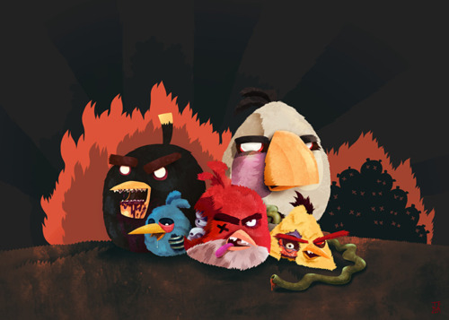

Fri, 18 Feb 2011 11:11:00 · illustration · angrybirds · games · art
cute tribute artwork for angry zombie birds by

Cute tribute artwork for ’Angry Zombie Birds’ by Polish illustrator, Tomasz Kaczkowki.
Fri, 18 Feb 2011 11:11:00 · illustration · angrybirds · games · art

Cute tribute artwork for ’Angry Zombie Birds’ by Polish illustrator, Tomasz Kaczkowki.